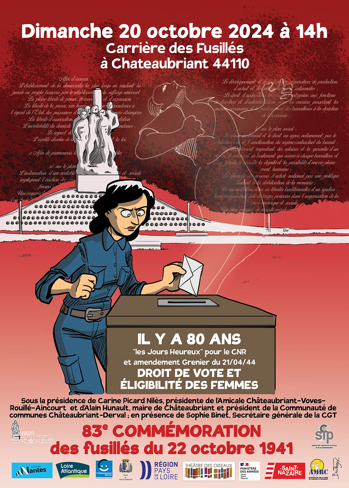

Annonce archivée
À Châteaubriant, l’appel à la 83e commémoration des fusillés
Date indiquée par Facebook · 18 octobre 2024
Repères éditoriaux
Nous avions relayé l’appel à honorer la mémoire des fusillés du 22 octobre 1941. L’affiche donnait rendez-vous dimanche 20 octobre 2024 à 14 h à la carrière des Fusillés, à Châteaubriant.
Texte conservé avec la publication
Commémoration du 83e anniversaire de l’exécution des 50 Otages, fusillés par les nazis le 22 octobre 1941 à Châteaubriant, Nantes et au Mont-Valérien, afin que leur sacrifice ne soit pas oublié.
Dans cette période marquée dans notre pays par la montée électorale de l’extrême droite et de ses idées d’exclusion et de haine, et dans le monde par des conflits particulièrement meurtriers pour les populations civiles, soyons nombreux à honorer la mémoire des résistantes et résistants et à défendre les valeurs de solidarité et de paix de la Résistance portées par le CNR et son programme « Les Jours heureux ».
Cette année, un accent particulier sera mis sur les droits des femmes, à l’occasion du 80ème anniversaire de l’amendement Grenier (dirigeant PCF) qui permit d’inscrire dans la loi le droit de vote et d’éligibilité des femmes.
Un départ collectif est organisé au départ de Niort, sur le grand parking près de l'UD CGT, 8 rue Joseph Cugnot.
Rendez-vous à 8h30 pour un départ en co-voiturage.
Rendez-vous à 8h30 pour un départ à heures en co-voiturage.
Dimanche 20 octobre à Châteaubriant :
- 13h30 au rond-point Fernand Grenier : hommage à Fernand Grenier.
- 14h30 à la Sablière : hommage aux fusillés en présence de Sophie Binet, secrétaire générale de la CGT.
-15h45 : évocation historique par le Théâtre des Oiseaux, mise en scène de Bernard Martin Fargier.

Sources
Archive rouge · export Facebook · AR-0002-FB-01270
À lire aussi · Le PCF rend hommage aux 27 fusillés de Châteaubriant